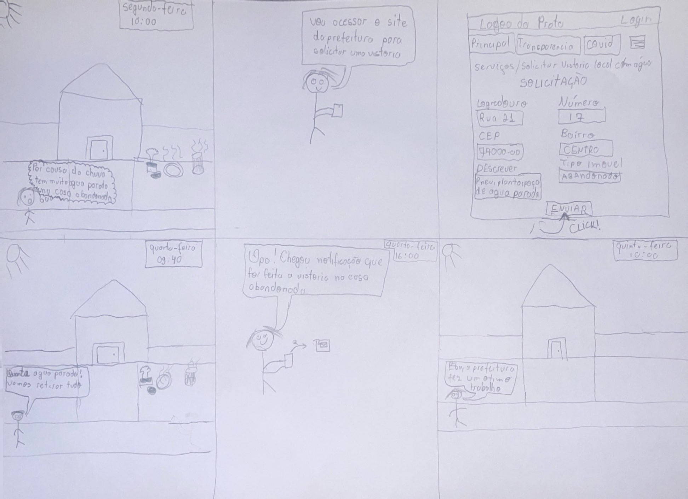

Relato do resultado da avaliação dos StoryBoards
Introdução
O documento presente tem como objetivo documentar os achados e conclusões adquiridos pela avaliação dos Storyboards feitos pela equipe, referentes a cada tarefa proposta neste projeto, disponibilizando as ferramentas necessárias para a equipe prosseguir e/ou ajustar cada storyboard antes de prosseguir à próxima etapa de design.
Metodologia
A metodologia utilizada, assim como já mencionado no artefato de planejamento de avaliação dos storyboards, se compunha de entrevistas com os usuários, com o intuito de compreender sua visão sobre a tarefa apresentada e suas primeiras impressões.
Os entrevistados são primeiramente introduzidos, seja pela entrevista diretamente ou por mensagem em texto, sobre os objetivos e informações gerais da entrevista e , em seguida, durante a entrevista, questionados uma nova vez a respeito de sua participação e consentimento à registro de imagem e respostas, assim disponibilizando um registro audiovisual do consentimento. Após isso, foram explicados a respeito do que se trata um storyboard e então apresentado o storyboard em questão. Após a apresentação, foram realizadas as perguntas disponibilizadas no planejamento de avaliação dos storyboards, com possibilidade de pequenas alterações para melhor atender ao entrevistado, e então registradas as respostas que serão disponibilizadas ao decorrer deste documento.
Toda entrevista possui 2 fichas, representadas pela tabela 1 e 2, que são preenchidas pelo pesquisador. A tabela 1 é preenchida com informações importantes sobre a entrevista. Já a tabela 2 é preenchida com as respostas do entrevistado.
| Dados gerais da entrevista | Resposta |
|---|---|
| Entrevistador: | - |
| Nome do(a) entrevistado(a): | - |
| Faixa etária do(a) entrevistado(a): | - |
| Profissão do(a) entrevistado(a): | - |
| Data da entrevista: | - |
| Horário da entrevista: | - |
Fonte: DOURADO, Pedro Lucas. 2024
Tabela 2 - Ficha de entrevista - perguntas
| Enumeração de perguntas | Pergunta | Tipo de pergunta | Respostas possíveis |
|---|---|---|---|
| 1 | Os usuários envolvidos no storyboard condizem com a realidade? | Fechada | Sim / Não |
| 2 | O cenário que o storyboard está inserido condiz com a realidade? | Fechada | Sim / Não |
| 3 | As ações realizadas pelo usuário no storyboard condizem com o esperado? | Fechada | Sim / Não |
| 4 | Você compreendeu o storyboard aqui passado e as pessoas envolvidas? | Fechada | Sim / Não |
| 5 | Foi possível compreender os passos realizados? Se não, por que? | Fechada / Aberta | Sim / Não e Discursiva |
| 6 | Foi possível identificar a vantagem e a satisfação final do storyboard? | Fechada | Sim / Não |
| 7 | O storyboard mostra como o produto resolve o problema ou a necessidade do usuário? | Fechada | Sim / Não |
| 8 | O storyboard demonstra os benefícios e as vantagens da ferramenta? | Fechada | Sim / Não |
| 9 | Dados os aspectos apresentados, você vê a possibilidade desse cenário ocorrer na cidade? | Fechada | Sim / Não |
| 10 | Dados os aspectos apresentados, você vê a população criando uma cultura para utilizar a proposta aqui descrita? Explique | Aberta | Discursiva |
| 11 | Dados os aspectos apresentados, você acha que é viável a utilização da ferramenta e que isso trará benefícios para as partes interessadas? Explique. | Aberta | Discursiva |
| 12 | Há alguma alteração ou consideração que queira realizar para melhor trabalharmos o que foi proposto aqui? Se sim, por que? | Fechada / Aberta | Sim e Discursiva / Não |
Fonte: FREITAS, Cainã. 2024.
Resultados
Primeira Entrevista - Storyboard Registrar e verificar o panorama de saúde da cidade
Dados gerais da entrevista:
- Entrevistador: Lucas Meireles
- Nome do(a) entrevistado(a): Rafaela
- Faixa etária do(a) entrevistado(a): 21 a 30 anos
- Profissão do(a) entrevistado(a): Estudante de Medicina
- Data da entrevista: ??
- Horário da entrevista: ??
Abaixo se encontra a Figura 1 referente ao Storyboard da tarefa Registrar e verificar o panorama de saúde da cidade.
 Fonte: MEIRELES, Lucas. 2024
Fonte: MEIRELES, Lucas. 2024
A seguir se encontra o vídeo 1 com a entrevista referente ao Storyboard 1
Disponível em : https://youtu.be/GRo-fSJtlY8
Abaixo na tabela 3 se encontra as respostas às perguntas coletadas na entrevista no Vídeo 1 e referentes ao Storyboard da Figura 1:
| Enumeração de perguntas | Pergunta | Resposta |
|---|---|---|
| 1 | Os usuários envolvidos no storyboard condizem com a realidade? | Sim |
| 2 | O cenário que o storyboard está inserido condiz com a realidade? | Sim |
| 3 | As ações realizadas pelo usuário no storyboard condizem com o esperado? | Sim |
| 4 | Você compreendeu o storyboard aqui passado e as pessoas envolvidas? | Sim |
| 5 | Foi possível compreender os passos realizados? Se não, por que? | Sim |
| 6 | Foi possível identificar a vantagem e a satisfação final do storyboard? | Sim |
| 7 | O storyboard mostra como o produto resolve o problema ou a necessidade do usuário? | Sim |
| 8 | O storyboard demonstra os benefícios e as vantagens da ferramenta? | Sim |
| 9 | Dados os aspectos apresentados, você vê a possibilidade desse cenário ocorrer na cidade? | Sim |
| 10 | Dados os aspectos apresentados, você vê a população criando uma cultura para utilizar a proposta aqui descrita? Explique | Sim, especialmente por se tratar de algo que afeta a população como um todo e auxilia na segurança dos mesmos. |
| 11 | Dados os aspectos apresentados, você acha que é viável a utilização da ferramenta e que isso trará benefícios para as partes interessadas? Explique. | Sim, e pode impactar positivamente o trabalho de profissionais de saúde, ajudando na identificação de zonas de risco e até previsão de surtos de doenças |
| 12 | Há alguma alteração ou consideração que queira realizar para melhor trabalharmos o que foi proposto aqui? Se sim, por que? | Sim, a parte de seleção de local em que o usuário esteve pode ser demorado e reduzir o incentivo do mesmo a utilizar a função, porém ele também pode ser convencido da importância disso. |
Fonte: MEIRELES, Lucas. 2024
Segunda Entrevista - Cadastrar e acompanhar uma reclamação na ouvidoria.
Dados gerais da entrevista:
- Entrevistador: Cainã Freitas
- Nome do(a) entrevistado(a): Ana Vieira
- Faixa etária do(a) entrevistado(a): 30 a 45 anos
- Profissão do(a) entrevistado(a): Funcionária Pública
- Data da entrevista: 03/06/2024
- Horário da entrevista: 22:19
Abaixo se encontra a Figura 2 referente ao Storyboard da tarefa Cadastrar e acompanhar uma reclamação na ouvidoria.
 Fonte: FREITAS, Cainã. 2024.
Fonte: FREITAS, Cainã. 2024.
A seguir se encontra o vídeo 2 com a entrevista referente ao Storyboard 2
Disponível em : https://youtu.be/Vo36pWGr4NE
Abaixo na tabela 4 se encontra as respostas às perguntas coletadas na entrevista no Vídeo 2 e referentes ao Storyboard da Figura 2:
| Enumeração de perguntas | Pergunta | Resposta |
|---|---|---|
| 1 | Os usuários envolvidos no storyboard condizem com a realidade? | Sim |
| 2 | O cenário que o storyboard está inserido condiz com a realidade? | Sim |
| 3 | As ações realizadas pelo usuário no storyboard condizem com o esperado? | Sim |
| 4 | Você compreendeu o storyboard aqui passado e as pessoas envolvidas? | Sim |
| 5 | Foi possível compreender os passos realizados? Se não, por que? | Sim |
| 6 | Foi possível identificar a vantagem e a satisfação final do storyboard? | Sim |
| 7 | O storyboard mostra como o produto resolve o problema ou a necessidade do usuário? | Sim |
| 8 | O storyboard demonstra os benefícios e as vantagens da ferramenta? | Parcialmente |
| 9 | Dados os aspectos apresentados, você vê a possibilidade desse cenário ocorrer na cidade? | Sim |
| 10 | Dados os aspectos apresentados, você vê a população criando uma cultura para utilizar a proposta aqui descrita? Explique | Sim, mas nem todos os cidadãos conhecem ferramenta da ouvidoria, é necessario uma campanha para melhor divulgar. |
| 11 | Dados os aspectos apresentados, você acha que é viável a utilização da ferramenta e que isso trará benefícios para as partes interessadas? Explique. | Sim, desde que as partes interessadas saibam onde encontrar a ferramenta |
| 12 | Há alguma alteração ou consideração que queira realizar para melhor trabalharmos o que foi proposto aqui? Se sim, por que? | Não |
Fonte: FREITAS, Cainã. 2024.
Terceira Entrevista - Storyboard Acessar o módulo de Contra Cheque e consultar os processos do servidor.
Dados gerais da entrevista:
- Entrevistador: Augusto Duarte
- Nome do(a) entrevistado(a): Rute Oliveira
- Faixa etária do(a) entrevistado(a): 40 a 55 anos
- Profissão do(a) entrevistado(a): Funcionária Pública
- Data da entrevista: 13/06/2024
- Horário da entrevista: 16:35
Abaixo se encontra a Figura 3 referente ao Storyboard da tarefa Acessar o módulo de Contra Cheque e consultar os processos do servidor.
 Fonte: DUARTE, Augusto. 2024.
Fonte: DUARTE, Augusto. 2024.
A seguir se encontra o vídeo 3 com a entrevista referente ao Storyboard 3
Disponível em : https://youtu.be/FE9nz108ViE
Abaixo na tabela 5 se encontra as respostas às perguntas coletadas na entrevista no Vídeo 3 e referentes ao Storyboard da Figura 3:
Tabela 5 - Respostas da entrevista para o Storyboard 3
| Enumeração de perguntas | Pergunta | Resposta |
|---|---|---|
| 1 | Os usuários envolvidos no storyboard condizem com a realidade? | Sim |
| 2 | O cenário que o storyboard está inserido condiz com a realidade? | Sim |
| 3 | As ações realizadas pelo usuário no storyboard condizem com o esperado? | Sim |
| 4 | Você compreendeu o storyboard aqui passado e as pessoas envolvidas? | Sim |
| 5 | Foi possível compreender os passos realizados? Se não, por que? | Sim |
| 6 | Foi possível identificar a vantagem e a satisfação final do storyboard? | Sim |
| 7 | O storyboard mostra como o produto resolve o problema ou a necessidade do usuário? | Sim |
| 8 | O storyboard demonstra os benefícios e as vantagens da ferramenta? | Sim |
| 9 | Dados os aspectos apresentados, você vê a possibilidade desse cenário ocorrer na cidade? | Sim |
| 10 | Dados os aspectos apresentados, você vê a população criando uma cultura para utilizar a proposta aqui descrita? Explique | Sim, muito importante para os usuários, para a população, com certeza é uma evolução, vai ajudar muito essa ferramenta. |
| 11 | Dados os aspectos apresentados, você acha que é viável a utilização da ferramenta e que isso trará benefícios para as partes interessadas? Explique. | Sim, haverá uma melhora nas respostas do orgão publico, além de que o servidor tem a possibilidade de realizar a tarefa no seu cotidiano, sem preisar se deslocar. |
| 12 | Há alguma alteração ou consideração que queira realizar para melhor trabalharmos o que foi proposto aqui? Se sim, por que? | Não |
Fonte: DUARTE, Augusto. 2024.
Quarta Entrevista - Solicitar vistoria de local com água parada
Dados gerais da entrevista:
- Entrevistador: Pedro Lucas
- Nome do(a) entrevistado(a): Renato Cesar Oliveira
- Faixa etária do(a) entrevistado(a): menor que 21 anos
- Profissão do(a) entrevistado(a): estudante
- Data da entrevista: 08/07/2024
- Horário da entrevista: 20:17
- Local da entrevista: Casa do entrevistador
Abaixo se encontra a Figura 4 referente ao Storyboard da tarefa Solicitar vistoria de local com água parada.
Figura 4 - O storyboard da funcionalidade de Solicitar vistoria de local com água parada.

Fonte: DOURADO, Pedro Lucas. 2024.
A seguir se encontra o vídeo 2 com a entrevista referente ao Storyboard 2
Disponível em : https://youtu.be/lBlT67JbN7Y
Abaixo na tabela 4 se encontra as respostas às perguntas coletadas na entrevista no Vídeo 4 e referentes ao Storyboard da Figura 4:
| Enumeração de perguntas | Pergunta | Resposta |
|---|---|---|
| 1 | Os usuários envolvidos no storyboard condizem com a realidade? | Sim |
| 2 | O cenário que o storyboard está inserido condiz com a realidade? | Sim, meio urbano |
| 3 | As ações realizadas pelo usuário no storyboard condizem com o esperado? | Sim |
| 4 | Você compreendeu o storyboard aqui passado e as pessoas envolvidas? | Sim, confundi no começo as pessoas envolvidas achando que era a mesma mas depois vi que o cabelo estava diferente |
| 5 | Foi possível compreender os passos realizados? Se não, por que? | Sim |
| 6 | Foi possível identificar a vantagem e a satisfação final do storyboard? | Sim |
| 7 | O storyboard mostra como o produto resolve o problema ou a necessidade do usuário? | Sim, mostra que atingiu a finalidade |
| 8 | O storyboard demonstra os benefícios e as vantagens da ferramenta? | Sim, demonstra a praticidade de não ter que abrir um requerimento presencialmente |
| 9 | Dados os aspectos apresentados, você vê a possibilidade desse cenário ocorrer na cidade? | Sim |
| 10 | Dados os aspectos apresentados, você vê a população criando uma cultura para utilizar a proposta aqui descrita? Explique | Sim, se for aplicado um projeto de divulgação que a solicitação pode ser feita online |
| 11 | Dados os aspectos apresentados, você acha que é viável a utilização da ferramenta e que isso trará benefícios para as partes interessadas? Explique. | Sim, vai agilizar o trabalho das duas partes |
| 12 | Há alguma alteração ou consideração que queira realizar para melhor trabalharmos o que foi proposto aqui? Se sim, por que? | Deixar mais bonito |
Fonte: DOURADO, Pedro Lucas. 2024.
Histórico de Versões
| Data | Versão | Descrição | Autor(es) | Data de revisão | Revisor(es) |
|---|---|---|---|---|---|
| 03/06/2024 | 1.0 |
Elaboração inicial do documento | Lucas Meireles | 16/06/2024 | Pedro Lucas |
| 03/06/2024 | 1.0 |
Insere video | Cainã Freitas | 16/06/2024 | Pedro Lucas |
| 13/06/2024 | 1.3 |
Adição StoryBoard e dados da Entrevista | Augusto Duarte | 16/06/2024 | Pedro Lucas |
| 13/06/2024 | 1.4 |
Entrevista | Augusto Duarte | 16/06/2024 | Pedro Lucas |
| 13/06/2024 | 1.5 |
Tabela de respostas da Entrevista | Augusto Duarte | 16/06/2024 | Pedro Lucas |
| 08/07/2024 | 1.7 |
Adição Storyboard 3 | Pedro Lucas | 08/07/2024 | Augusto Duarte |